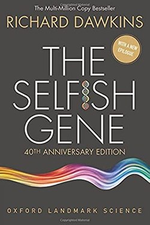

Library › Psychology & People
The Selfish Gene — Summary & Key Lessons

Genes are the players in evolution — and every form of life, including kindness, is their strategy.
📖 OPEN THE FULL INTERACTIVE BREAKDOWN →🌐 Read it in Hindi, Hinglish, Gujarati, Tamil & 22 more languages — free, with audio.
💡 The Big Idea
Dawkins' great reframe: evolution selects genes, not species or individuals. Animals (including humans) are vehicles built to propagate gene copies. Seen this way, altruism, selfishness, family love and even war are all strategies in the gene's game. The book's famous punchline is counterintuitive: a gene 'for' altruism can thrive — because helping copies of itself (kin and reciprocators) is the best way to copy itself. Understanding the lens changes how you see all behaviour.
🧠 The 9 Key Lessons
Lesson 1: The Gene's Eye View
Chapter 1: The Lens
Dawkins' trick of perspective: ask not what is good for the species or the individual, but what is good for the gene. Behaviour that looks altruistic at the animal level can be ruthlessly calculated at the gene level — a bird's warning cry that endangers itself helps relatives carrying the same genes. The lesson for human self-understanding: your motives are often more entangled than they appear.
📖 Example: A mother's sleepless nights look selfless — at the gene level, they are the most calculated investment possible. Read the full example →
⚡ Do this: For one behaviour you do for others, ask the gene's-eye question: who shares my interests here?
Lesson 2: Kin Selection: Why Family Feels Different
Chapter 2: The Family
Genes promote care for relatives because relatives carry copies of them — Hamilton's rule: help when the benefit to the relative times relatedness outweighs the cost. This explains the evolutionary pull of family and the cold arithmetic beneath warm feelings. It is also the origin of nepotism's pull — human history is full of it.
📖 Example: The willingness to sacrifice for a sibling (50% shared genes) exceeds that for a cousin (12.5%) — the math is in the feeling. Read the full example →
⚡ Do this: Notice where your loyalty runs strongest: is it pure love, or is some of it arithmetic dressed as virtue?
Lesson 3: Reciprocal Altruism: The Tit for Tat Engine
Chapter 3: Cooperation
The book's hope: cooperation can evolve among non-kin through reciprocity. In repeated games, Tit for Tat (cooperate first, then mirror) wins — it is nice, retaliatory, forgiving and clear. Dawkins' deeper claim: our brains have the capacity to rebel against the genes — to be genuinely generous because we can see beyond the game.
📖 Example: A village's reputation system works because cheaters are remembered — cooperation is profitable, and so is honesty. Read the full example →
⚡ Do this: Run Tit for Tat in one relationship: open cooperative, respond in kind, forgive quickly, be predictable.
Lesson 4: The Meme: Ideas That Reproduce
Chapter 4: Culture
Dawkins coined 'meme' here: a unit of culture — a tune, an idea, a fashion — that spreads by imitation like a gene. Memes are selected by the traits that make them copyable: usefulness, catchiness, emotional charge. The lens is the predecessor of every viral-content analysis: what makes an idea spread is often what makes it sticky, not what makes it true.
📖 Example: Rumours and slogans spread by emotional charge and repetition; truthfulness is not the selection criterion. Read the full example →
⚡ Do this: For the next belief that goes viral in your feed, audit it as a meme: what makes it copyable, and is it true?
Lesson 5: We Can Be Better Than Our Genes
Chapter 5: The Rebel
This is the book's surprising moral: because we are the only species that understands its own programming, we are also the only one that can switch it off. Our brains can anticipate, plan and choose — Dawkins ends urging us to teach generosity precisely because we are not born generous. Biology explains, it does not excuse.
📖 Example: Knowing our tribal wiring is why we can design constitutions, courts and contracts that outrun the tribe. Read the full example →
⚡ Do this: Identify one 'genetic' impulse (status, tribalism, greed) and design one counter-rule against it — consciousness as rebellion.
Lesson 6: The Battle of the Sexes
Chapter 8: The Battle of the Generations
Dawkins on sexual conflict: because sperm are cheap and eggs expensive, the two sexes' genetic strategies diverge — and their interests genuinely conflict, even within a couple. Understanding the game explains courtship, infidelity, parental investment and family structure without moralising: the strategies are the strategies, and knowing them lets you see where your own interests actually lie.
📖 Example: A male bird that mates widely risks little; a female that chooses badly pays for the season — so the two sexes run different games with the same genes. Read the full example →
⚡ Do this: Name one place where your genuine interest and your partner's genuinely diverge — naming it beats pretending they are identical.
Lesson 7: The Survival Machine
Chapter 2: The Replicators
Dawkins' opening move is the reframe that scandalised biology: bodies are not the point — genes are; we are survival machines built by replicators to preserve copies of themselves. The provocative value is methodological: ask 'what does the gene gain?' and previously puzzling behaviours — altruism, jealousy, self-sacrifice — start making sense at the level that actually evolves.
📖 Example: A mother's protective ferocity looks 'selfless' until you ask which genes are being protected — the answer reshapes the whole picture. Read the full example →
⚡ Do this: For one behaviour that confuses you (yours or others'), run the gene's-eye question: what replicating pattern does this serve? Just ask it.
Lesson 8: The Arms Race of the Sexes
Chapter 9: The Battle of the Sexes
The asymmetry is brutal and elegant: eggs are expensive, sperm is cheap, so the sexes face different evolutionary strategies — and the conflict produces the elaborate courtship, jealousy and parental investment we call love. Dawkins is careful to say 'is' does not mean 'ought', but the map explains a remarkable amount of human behaviour without a single moral judgement.
📖 Example: Why peacocks are beautiful and peahens are drab: the choosy sex — the one investing more — selects the display, and the display becomes the arms race. Read the full example →
⚡ Do this: Use the asymmetry as a lens, not a verdict: in your own pairing decisions, what is the actual cost structure each side is optimising?
Lesson 9: The Good Gene: Altruism as Strategy
Chapter 7: Family and Altruism
The 'selfish gene' does not make selfish people — it explains apparent altruism: a gene that sacrifices for kin can propagate if the kin share it. This is kin selection, and it explains why family feels different from strangers — not sentiment but arithmetic. The liberating twist: being 'selfish' at the level of genes can produce genuine love, loyalty and sacrifice at the level of people.
📖 Example: The parent who gives a kidney carries the same genes as the child; the 'altruism' is a replication strategy wearing a parent's heart. Read the full example →
⚡ Do this: Notice one family behaviour that surprises you and read it as kin arithmetic. Then drop the cynicism — the arithmetic made the love real.
✅ 5-Step Action Plan
- Ask the gene's-eye question about one altruistic behaviour.
- Notice where loyalty is love versus arithmetic.
- Use Tit for Tat openly in one ongoing relationship.
- Audit one viral idea for copyability versus truth.
- Design one counter-rule against a raw impulse.
⚠️ When This Doesn't Work
The 'selfish gene' metaphor has been widely misread as a moral endorsement of selfishness; Dawkins himself argues the opposite, and many biologists now stress gene-gene cooperation as much as competition. The lens is powerful; use it carefully.
💀 The Graveyard Proves It
🧬 23andMe — 15 Million DNA Profiles, No Second Act. Burn: $6B valuation → bankruptcy Read the full case study →
💬 Best Quotes from The Selfish Gene
- “We are survival machines — robot vehicles blindly programmed to preserve the selfish molecules known as genes.”
- “Let us try to teach generosity and altruism, because we are born selfish.”
- “The important thing is not whether individuals are selfish; the important thing is what a gene's selfishness can do to a body.”
Interactive version: mark lessons as read, listen in your language, share quote cards.